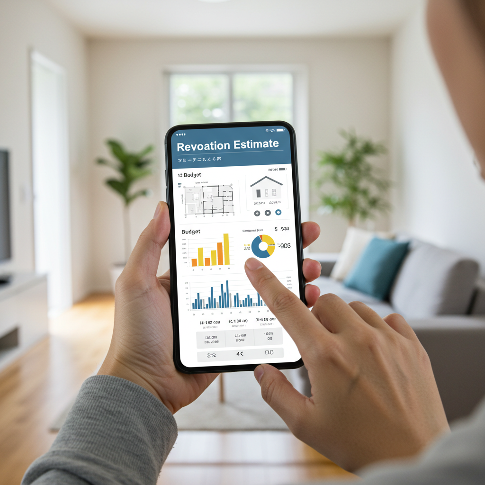
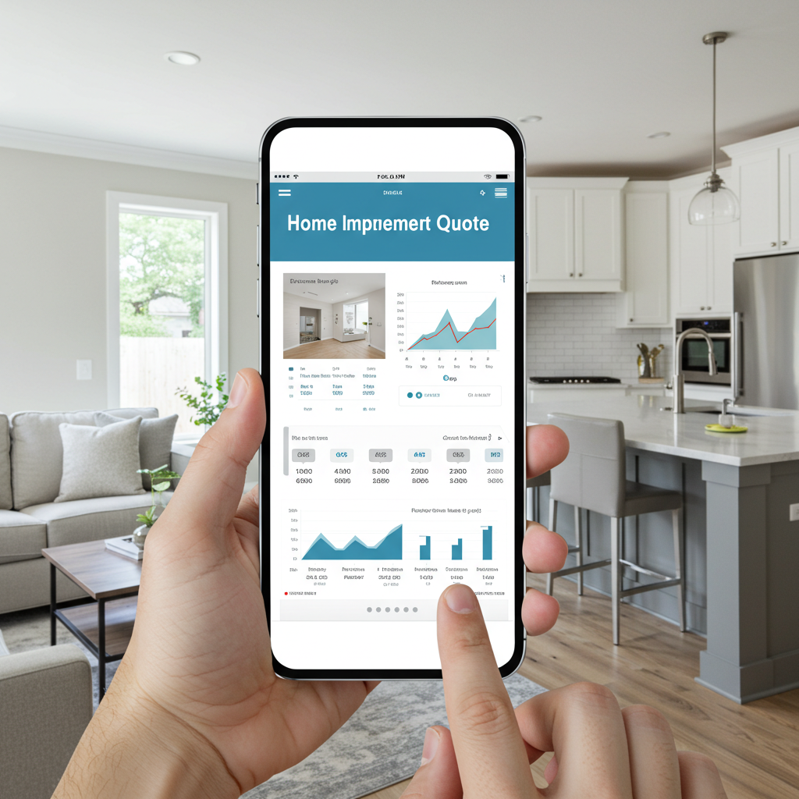
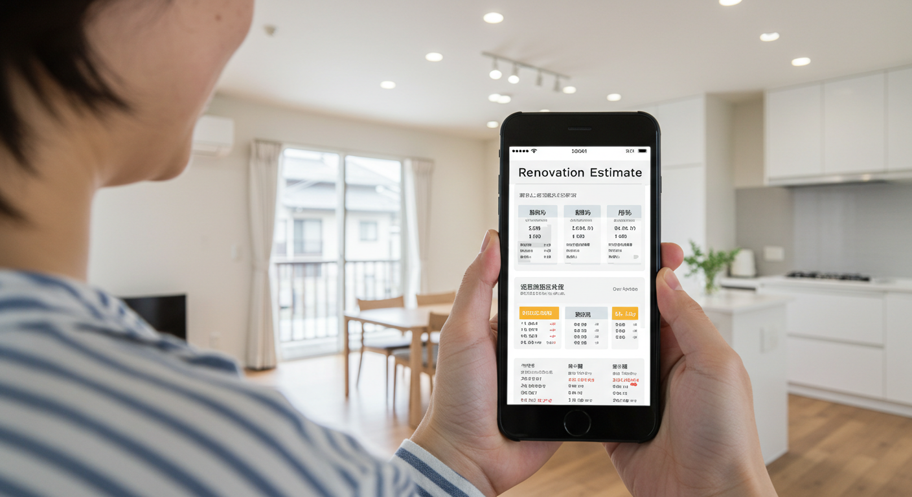
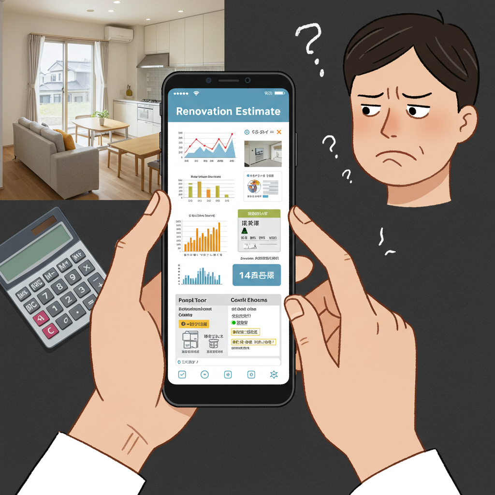
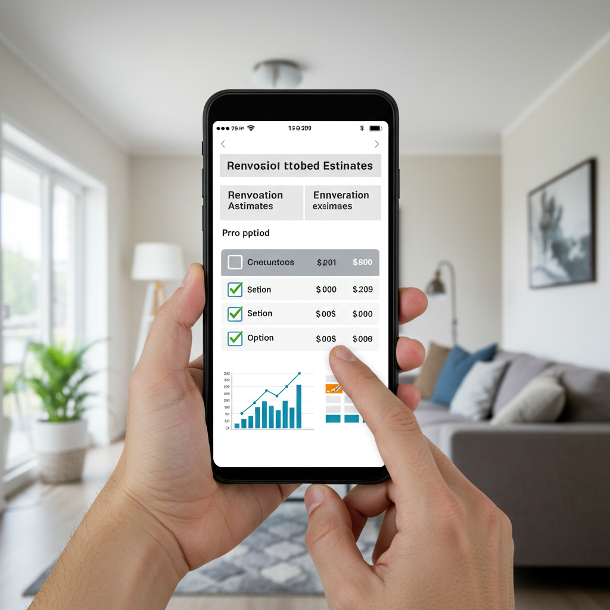
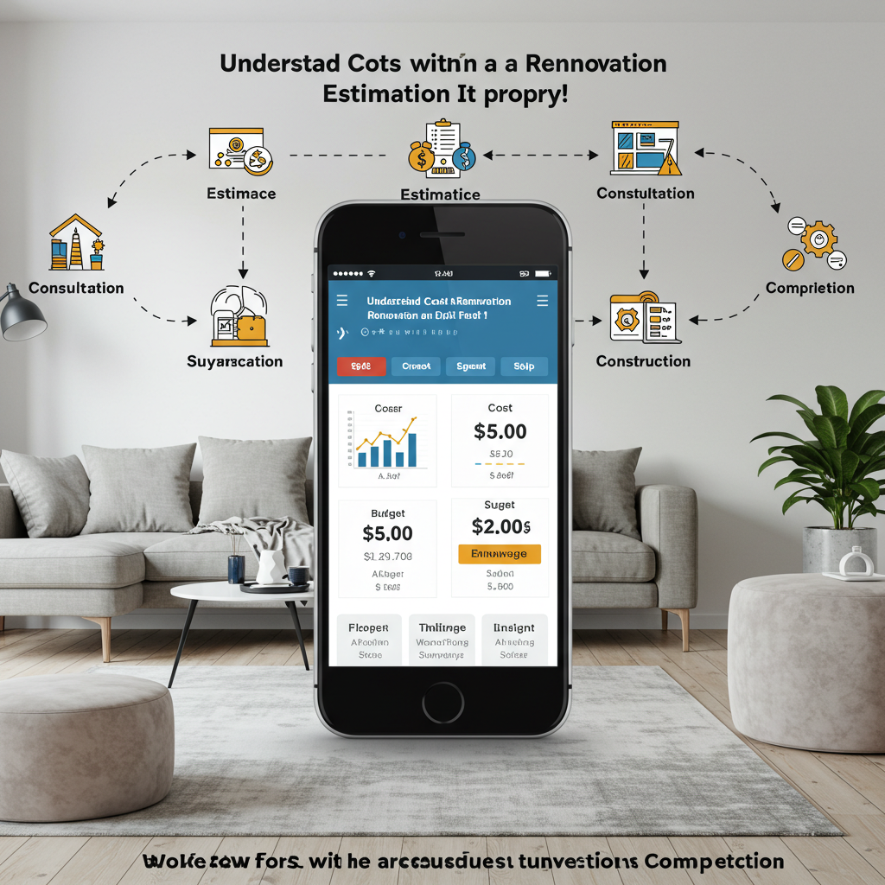

リフォームの見積もりアプリで費用を把握！失敗しない選び方と活用術

導入

「古くなったキッチンを新しくしたいな」「子どもが独立したから、夫婦二人の暮らしやすい間取りに変えたい」「もっと快適なバスルームで、一日の疲れを癒したい」。
暮らしの変化や建物の経年とともに、私たちの住まいに対する想いは少しずつ形を変えていきます。そんなとき、頭に浮かぶのが「リフォーム」という選択肢。雑誌やテレビで見るような素敵な空間を思い描き、夢が膨らむ一方で、ふと大きな不安がよぎります。
「一体、いくらかかるんだろう？」
リフォームを考え始めたほとんどの方が、まずこの「費用」という壁に突き当たります。リフォーム会社にいきなり電話をして聞くのは少し勇気がいるし、かといってインターネットで調べても、情報が多すぎて何が正しいのか分からない。料金表を見ても「〇〇万円～」と書かれているだけで、自分の場合はいくらになるのか、見当もつかない…。
そんな、リフォーム計画の第一歩で立ち止まってしまいがちな、あなたの心強い味方になってくれるのが、今回ご紹介する「リフォーム見積もりアプリ」です。
スマートフォンやタブレットさえあれば、いつでも、どこでも、誰でも気軽にリフォームの概算費用を調べられる。この便利なツールは、これまで不透明で分かりにくいと思われがちだったリフォームの世界を、ぐっと身近なものにしてくれました。
しかし、手軽に使えるからこそ、その特性を正しく理解し、賢く活用することが大切です。アプリで出た金額だけを鵜呑みにして計画を進めてしまうと、後から「こんなはずじゃなかった」という事態になりかねません。
この記事では、リフォーム見積もりアプリとは一体どのようなものなのか、その基本的な機能から、利用する上でのメリット・デメリット、そして数あるアプリの中から自分に合ったものを選ぶためのポイントまで、一つひとつ丁寧に、分かりやすく解説していきます。
さらに、アプリをただの見積もりツールとして終わらせるのではなく、リフォーム計画全体を成功に導くための「羅針盤」として活用していくための具体的な流れやコツもご紹介します。
リフォームは、決して安い買い物ではありません。だからこそ、後悔のない、心から満足できるものにしたいですよね。この記事が、あなたの理想の住まいづくりへの第一歩を、確かな自信と共に踏み出すためのお手伝いができれば幸いです。さあ、一緒にリフォーム見積もりアプリの世界を探検してみましょう。
リフォーム見積もりアプリとは？その必要性

まずは、「リフォーム見積もりアプリ」が一体どのようなもので、なぜ今これほどまでに注目を集めているのか、その基本から見ていきましょう。このツールが持つ可能性を理解することで、あなたのリフォーム計画はよりスムーズに、そして確かなものへと変わっていきます。
リフォーム見積もりアプリでできること
「見積もりアプリ」という名前から、単に費用を計算するだけのツールだと思っていませんか？実は、最近のアプリはそれだけにとどまらない、多彩な機能を備えています。リフォームを検討する上で「あったらいいな」と思う機能が、この小さなアプリの中にぎゅっと詰まっているのです。主な機能は、大きく分けて以下の5つです。
1. 費用シミュレーション機能
これが最も基本的かつ重要な機能です。リフォームしたい場所（キッチン、浴室、トイレなど）、希望する設備のグレード、広さといった簡単な情報を入力するだけで、おおよそのリフォーム費用（概算費用）を算出できます。
例えば、「システムキッチンを交換したい」と考えたとき、アプリの画面に従って「キッチンの形状（I型、L型など）」「サイズ」「扉の素材」「コンロの種類（ガス、IH）」「食洗機の有無」などを選択していきます。すると、それらの条件に応じた費用の目安が画面に表示されるのです。
この機能の素晴らしい点は、様々なパターンを気軽に試せること。「食洗機を付けると、いくらくらい高くなるのかな？」「扉のグレードを一つ上げると、どう変わるだろう？」といった疑問を、その場で瞬時に解決できます。これにより、自分の希望と予算のバランスを、ゲーム感覚で楽しみながら探っていくことが可能になります。
2. デザイン・間取りシミュレーション機能
費用だけでなく、リフォーム後の空間を具体的にイメージしたいという願いを叶えてくれるのが、この機能です。壁紙や床材の色を変えてみたり、新しいキッチンや家具を配置してみたりと、まるで着せ替え人形のように、お部屋のコーディネートを試すことができます。
最近では、スマートフォンのカメラ機能と連携し、現実の部屋の映像にCGの家具や建材を重ねて表示する「AR（拡張現実）」技術を搭載したアプリも登場しています。これにより、「この壁紙、うちのリビングに合うかな？」「このソファを置くと、どのくらいのスペースが必要だろう？」といったことを、非常にリアルに確認できます。頭の中だけで想像するよりも、はるかに具体的な完成イメージを持つことができ、家族との意見交換もスムーズになるでしょう。
3. 業者検索・マッチング機能
概算費用やデザインのイメージが固まってきたら、次に必要になるのが、実際に工事を依頼するリフォーム会社探しです。多くのアプリには、お住まいの地域やリフォームしたい内容に応じて、条件に合うリフォーム会社を検索・紹介してくれる機能が備わっています。
各社の施工事例や得意な工事内容、利用者からの口コミなどをアプリ上で確認できるため、一社一社ホームページを検索して比較する手間が省けます。また、アプリによっては、匿名性を保ったまま複数の会社に相談や見積もり依頼ができる「一括見積もりサービス」と連携しているものもあります。これにより、個人情報をいきなり開示することなく、効率的に候補となる会社を絞り込んでいくことができます。
4. 施工事例の閲覧機能
リフォームのアイデアを探しているときに、非常に役立つのがこの機能です。他の人がどのようなリフォームをしたのか、そのビフォーアフターの写真や、かかった費用、こだわったポイントなどを閲覧できます。
「こんな素敵な書斎の作り方があったのか」「この収納アイデアは真似したい！」など、プロが手掛けた数多くの事例を見ることで、自分たちのリフォームプランをより豊かに、より具体的にしていくためのヒントをたくさん得ることができます。自分の好みや理想に近い事例を見つけたら、それを保存しておき、後でリフォーム会社に「こんな雰囲気にしたい」と伝える際の参考資料として活用することも可能です。
5. リフォームに関する情報収集機能
リフォームを成功させるためには、費用やデザインだけでなく、補助金制度やリフォームローンの知識、建材の種類や特徴、工事の流れといった専門的な情報も必要になります。多くのアプリでは、こうしたリフォームに関するお役立ち情報がコラムや記事としてまとめられています。
「知っておきたい、リフォーム減税の仕組み」「失敗しない、壁紙選びのコツ」「トラブルを防ぐ、契約前のチェックポイント」など、専門家が監修した信頼性の高い情報を、リフォーム計画の進捗に合わせて手軽に学ぶことができます。これらの知識は、リフォーム会社との打ち合わせをスムーズに進めたり、より良い提案を引き出したりする上で、大きな力となってくれるでしょう。
なぜ今、アプリでの見積もりが注目されるのか
では、なぜ今、このようなアプリを使った見積もりが多くの人に支持され、注目を集めているのでしょうか。その背景には、私たちのライフスタイルや価値観の変化、そしてテクノロジーの進化が深く関わっています。
1. スマートフォンの普及と情報収集スタイルの変化
最大の理由は、言うまでもなくスマートフォンの爆発的な普及です。今や、知りたいことがあれば、私たちはまず手元のスマートフォンで検索します。かつては分厚いカタログを取り寄せたり、住宅展示場に足を運んだりしなければ得られなかった情報が、指先一つで、いつでもどこでも手に入る時代になりました。リフォームという専門的な分野においても、この「手軽に、すぐに知りたい」というニーズは高まる一方です。アプリは、この現代的な情報収集スタイルに完璧にマッチしたツールなのです。
2. 時間的制約の増加（共働き世帯など）
共働き世帯が一般的になり、多くの人が日々の仕事や家事、育児に追われています。そんな忙しい毎日の中で、リフォーム会社の営業時間に合わせて電話をしたり、平日にショールームを訪れたりする時間を確保するのは、簡単なことではありません。
リフォーム見積もりアプリであれば、通勤中の電車の中、昼休み、子どもが寝静まった後の深夜など、自分の都合の良い「すきま時間」を使って、リフォーム計画の第一歩を踏み出すことができます。この時間や場所を選ばない利便性が、多忙な現代人のライフスタイルに受け入れられているのです。
3. 対面コミュニケーションへの心理的ハードルの変化
特に若い世代を中心に、いきなり電話をかけたり、店舗を訪れたりといった直接的なコミュニケーションに対して、心理的なハードルを感じる人が増えています。
「まだ本格的に決めたわけじゃないのに、営業されたらどうしよう」「専門的なことを聞かれても、うまく答えられないかもしれない」
こうした不安から、リフォーム会社への問い合わせをためらってしまうケースは少なくありません。アプリであれば、誰にも気兼ねすることなく、完全に自分のペースで情報を集め、検討を進めることができます。まずは匿名で、気軽に、そしてじっくりと。この「プレッシャーからの解放」が、多くの人にとって大きな魅力となっています。
4. リフォーム市場の透明性への期待
残念ながら、リフォーム業界には「価格が不透明」「悪質な業者がいる」といったネガティブなイメージが根強く残っているのも事実です。消費者としては、適正な価格で、信頼できる会社に工事を依頼したいと願うのは当然のことです。
リフォーム見積もりアプリは、複数の選択肢を客観的に比較検討する機会を提供してくれます。様々な条件でシミュレーションを繰り返すことで、おおよその費用相場を把握できますし、他の利用者の口コミを参考にすることで、業者の評判を知ることもできます。このように、アプリは情報の非対称性を解消し、リフォーム市場全体の透明性を高める一助となるツールとして、大きな期待が寄せられているのです。
5. テクノロジーの進化（AI、ARなど）
AI（人工知能）やAR（拡張現実）といった最新技術の進化も、アプリの魅力を高める大きな要因です。AIが過去の膨大な見積もりデータを分析し、より精度の高い概算費用を算出したり、AR技術がリフォーム後の空間を驚くほどリアルに再現したりと、テクノロジーは私たちのリフォーム体験をより豊かで便利なものへと変えつつあります。今後も技術の進化とともに、アプリはさらに高機能で使いやすいツールへと発展していくことでしょう。
このように、リフォーム見積もりアプリは、単なる便利な計算機ではありません。それは、現代社会のニーズに応え、テクノロジーの進化を取り込みながら、リフォームという大きなプロジェクトへの入り口を、誰にとっても開かれたものにしてくれる、画期的なツールなのです。
リフォーム見積もりアプリのメリット

リフォーム見積もりアプリが持つ可能性について理解したところで、次に、私たちがこのツールを使うことで具体的にどのような恩恵を受けられるのか、そのメリットを4つの側面に分けて、より深く掘り下げていきましょう。これらのメリットを最大限に活かすことが、賢いリフォーム計画の第一歩となります。
メリット１．手軽に概算費用を把握できる
リフォーム計画における最大の関心事であり、同時に最も大きな不安の種でもある「費用」。この費用感を、驚くほど手軽に、そして迅速に把握できることこそ、アプリを利用する最大のメリットと言えるでしょう。
いつでも、どこでも、自分のペースで
従来、リフォームの概算費用を知るためには、リフォーム会社のホームページにある問い合わせフォームに個人情報を入力したり、電話をかけたり、あるいはショールームに足を運んで相談したりする必要がありました。これには、ある程度の時間と手間、そして「本気で検討している」という覚悟が求められました。
しかし、アプリならその必要はありません。例えば、朝の通勤電車の中でふと「うちのお風呂をリフォームしたら、いくらくらいかな？」と思い立ったとします。その場でスマートフォンを取り出し、アプリを起動。いくつかの質問にタップで答えていくだけで、ものの数分後にはおおよその費用が表示されます。夜、ベッドに入ってから「やっぱりキッチンのグレードを上げたいな」と考えれば、その場でシミュレーションをやり直すことも可能です。
このように、24時間365日、時間や場所の制約を受けることなく、完全に自分のタイミングで費用を調べられる手軽さは、忙しい現代人にとって計り知れない価値があります。
リフォームの「相場観」が身につく
リフォームを初めて検討する方にとって、何が適正価格なのかを判断するのは非常に困難です。アプリを使って様々なパターンでシミュレーションを繰り返すことは、この「相場観」を養うための絶好のトレーニングになります。
「ユニットバスの交換は、大体80万円から150万円くらいが相場なんだな」
「トイレの交換でも、便器の機能によって20万円も差が出ることがあるのか」
「壁紙の張り替えは、素材によって単価がこんなに違うんだ」
こうした知識を事前にインプットしておくことで、いざリフォーム会社から正式な見積もりを取った際に、その金額が妥当なものなのかを冷静に判断する基準を持つことができます。提示された金額にただ驚いたり、安易に飛びついたりするのではなく、「なぜこの金額になるのですか？」と、根拠に基づいた質問ができるようになるのです。これは、悪質な業者から身を守り、納得のいく契約を結ぶ上で非常に重要なスキルです。
予算計画のたたき台になる
リフォームは、いわば「夢（理想）」と「現実（予算）」のすり合わせ作業です。アプリで算出される概算費用は、このすり合わせを行うための具体的な「たたき台」となります。
例えば、「キッチンと浴室を同時にリフォームしたい」と考えていたとします。アプリでそれぞれシミュレーションした結果、合計で300万円かかることが分かりました。しかし、用意できる予算は250万円だったとしましょう。この時、「じゃあ、今回はキッチンだけにして、浴室は数年後にしようか」「キッチンのグレードを少し下げれば、予算内に収まるかもしれない」「あと50万円、リフォームローンを組むことを検討しようか」といった、より現実的で具体的な検討へと進むことができます。
漠然とした希望が、アプリを通じて具体的な数字に置き換わることで、リフォーム計画全体がぐっと現実味を帯び、次に何をすべきかが明確になるのです。
メリット２．複数業者との比較検討がスムーズに
理想のリフォームを実現するためには、信頼できるパートナー、つまり良いリフォーム会社を見つけることが不可欠です。アプリは、この業者選びのプロセスを劇的に効率化し、より客観的な視点での比較検討を可能にしてくれます。
情報収集の手間を大幅に削減
通常、複数のリフォーム会社を比較しようとすると、インターネットで一社ずつ検索し、それぞれのホームページから施工事例や会社概要、問い合わせ先などを探し出すという、地道で時間のかかる作業が必要になります。情報が様々なフォーマットで散在しているため、それらを整理して比較するのも一苦労です。
一方、業者検索機能を持つアプリでは、各社の情報が統一されたフォーマットで整理されています。お住まいの地域やリフォーム内容で絞り込めば、候補となる会社が一覧で表示され、それぞれの特徴や得意分野、施工事例、利用者からの評価などを効率的にチェックできます。まるでレストランの予約サイトで、料理のジャンルや予算、口コミ評価を比較しながらお店を選ぶような感覚で、リフォーム会社を探すことができるのです。
客観的な指標で比較できる
リフォーム会社のホームページは、当然ながら自社の魅力を最大限にアピールするように作られています。そのため、各社のウェブサイトを見ているだけでは、どこも良く見えてしまい、客観的な判断が難しい場合があります。
アプリでは、多くの場合、利用者からの口コミや評価（星の数など）が掲載されています。実際にその会社でリフォームを行った人の「生の声」は、広告や宣伝文句よりも信頼性が高く、業者選びの重要な判断材料となります。もちろん、口コミはあくまで個人の感想であり、すべてを鵜呑みにするのは危険ですが、多くの利用者が同様の点を評価していたり、逆に問題点を指摘していたりする場合、それはその会社の一つの傾向を示していると考えてよいでしょう。
「相見積もり」へのハードルが下がる
リフォームで適正価格を知り、良い業者を選ぶためのセオリーとして「相見積もり（複数の業者から見積もりを取ること）」が推奨されていますが、これを実践するのは意外と大変です。それぞれの会社に同じ条件を伝え、現地調査の日程を調整し、出てきた複数の見積書を比較検討する…このプロセスには多大な労力と時間が必要です。
アプリによっては、入力した条件を基に、複数の提携リフォーム会社へ一括で見積もりを依頼できる機能があります。一度の入力で複数の会社にアプローチできるため、相見積もりの手間が大幅に軽減されます。これにより、より多くの選択肢の中から、最も自分たちの希望に合った提案をしてくれる会社を、効率的に見つけ出すことが可能になるのです。
メリット３．営業担当者とのやり取りなしで検討可能
リフォームを考え始めたばかりの段階で、多くの人が感じるのが「営業されることへの抵抗感」です。まだ具体的な計画も固まっていないのに、しつこく電話がかかってきたり、契約を急かされたりするのは避けたいものです。アプリは、こうした心理的なストレスから私たちを解放してくれます。
匿名で、気兼ねなく情報収集
ほとんどのリフォーム見積もりアプリは、メールアドレスなどの簡単な登録だけで、個人情報を詳細に入力することなく利用を開始できます。氏名や住所、電話番号を伝えずに、費用のシミュレーションや情報収集ができるため、「問い合わせをしたら、営業電話の嵐になった」という事態を避けることができます。
これは、リフォーム計画の初期段階において、非常に大きなメリットです。誰からのプレッシャーも受けることなく、純粋に自分たちの希望や予算と向き合い、じっくりと時間をかけて検討を進めることができます。「ちょっと調べてみるだけ」という軽い気持ちで始められるこの手軽さが、リフォームへの第一歩を踏み出すハードルを大きく下げてくれるのです。
自分のペースで検討を進められる
営業担当者と直接やり取りを始めると、どうしても相手のペースに巻き込まれてしまうことがあります。「今月中に契約いただければ、特別に割引しますよ」といったセールストークに乗り、十分な検討をしないまま契約して後悔する、といったケースも少なくありません。
アプリを使えば、検討の主導権は常に自分自身にあります。今日はキッチン、明日はリビング、と気分に合わせてシミュレーションしたり、一度出した結果を数週間後に見直したりと、完全に自分のペースで計画を進めることができます。焦らされることなく、納得がいくまで何度でも考え直せるこの環境は、最終的に満足度の高いリフォームを実現するために不可欠な要素です。
断る際の心理的負担がない
複数の会社とやり取りを始めると、最終的に一社に決めた後、他の会社にお断りの連絡を入れなければなりません。親身に相談に乗ってくれた担当者に対して断りを入れるのは、気が重いと感じる人も多いでしょう。
アプリ上でのやり取りであれば、こうした心理的な負担も軽減されます。特に、一括見積もりサービスなどを利用した場合、システムを通じて断りの連絡ができる場合も多く、直接的なコミュニケーションを最小限に抑えることが可能です。
メリット４．家族とリフォームイメージを共有しやすい
リフォームは、多くの場合、家族全員に関わる一大プロジェクトです。しかし、それぞれの理想や希望が異なり、意見がまとまらずに計画が停滞してしまうことも少なくありません。アプリは、こうした家族間のコミュニケーションを円滑にする、優れたツールとしての側面も持っています。
「見える化」で認識のズレを防ぐ
「ナチュラルな雰囲気のキッチンにしたい」と一言で言っても、その「ナチュラル」が思い描くイメージは、人によって様々です。夫は明るい木目調を、妻は白いタイル調をイメージしているかもしれません。こうした言葉だけでは伝わりにくいイメージのズレが、後々のトラブルの原因になることがあります。
デザインシミュレーション機能を使えば、こうした抽象的なイメージを具体的なビジュアルとして「見える化」できます。タブレットやスマートフォンの画面を家族みんなで囲みながら、「この壁紙の色はどう？」「床材はこっちの方が温かみがあるね」と、具体的な映像を見ながら話し合うことができます。これにより、全員が同じ完成イメージを共有でき、「こんなはずじゃなかった」という認識の齟齬を防ぐことができます。
客観的な数字が話し合いの土台になる
家族会議で意見が対立しやすいもう一つのポイントが「予算」です。「もっと良い設備を入れたい」という希望と、「少しでも費用を抑えたい」という現実的な意見がぶつかることは日常茶飯事です。
ここで役立つのが、アプリが算出する客観的な数字です。
「この食洗機を追加すると、費用が15万円上がるみたいだよ」
「扉のグレードを一つ下げれば、7万円節約できるから、その分でタッチレス水栓が付けられるね」
このように、具体的な金額を基に話し合うことで、感情的な対立を避け、建設的な議論がしやすくなります。どこにこだわり、どこで妥協するのか。その優先順位を、家族全員が納得感を持って決めていくための、共通の土台をアプリが提供してくれるのです。
いつでもどこでも相談できる
家族が揃う時間がなかなか取れないというご家庭も多いでしょう。アプリなら、シミュレーションした結果をスクリーンショットで撮ったり、共有機能を使ったりして、LINEなどのメッセージアプリで簡単に送ることができます。仕事中のパートナーに「こんな感じはどうかな？」と気軽に意見を求めたり、遠方に住む両親にリフォームのイメージを伝えたりと、時間や場所を選ばずにコミュニケーションを取ることが可能です。
このように、リフォーム見積もりアプリは、単なる情報収集ツールにとどまらず、家族の想いを一つにまとめ、リフォームという共同作業を成功に導くための、強力なコミュニケーションツールにもなり得るのです。
リフォーム見積もりアプリのデメリット

ここまでリフォーム見積もりアプリが持つ数々のメリットをご紹介してきましたが、万能なツールというわけではありません。その手軽さや便利さの裏側には、知っておくべき注意点や限界も存在します。デメリットを正しく理解し、それを補うための対策を講じることで、アプリをより賢く、そして安全に活用することができます。
デメリット１．概算費用はあくまで目安である
アプリの最も便利な機能である費用シミュレーションですが、そこで算出される金額は、その名の通り「概算」、つまり「おおよその目安」に過ぎないということを、絶対に忘れてはいけません。この点を誤解していると、後の計画に大きな狂いが生じる可能性があります。
なぜ「概算」にしかならないのか？
アプリの見積もりは、ユーザーが入力した「広さ」「設備のグレード」といった表面的な情報と、アプリが持つ過去のデータや標準的な工事単価を基に算出されています。しかし、実際のリフォーム費用は、目に見えない様々な要因によって大きく変動します。
- 建物の構造や状態: 例えば、壁を撤去してリビングを広くしたい場合、その壁が建物を支える「構造壁」であれば、単純に撤去することはできず、補強工事など追加の費用と手間が必要になります。また、木造か鉄骨か、マンションか戸建てかによっても、工事の難易度や方法は大きく異なります。
- 下地の劣化状況: 壁紙を張り替える際、古い壁紙を剥がしてみたら下地の石膏ボードがカビだらけだった、床を剥がしたら土台がシロアリに食われていた、といったケースは珍しくありません。このような場合、当然ながら下地の補修や交換といった、当初の予定にはなかった追加工事が発生し、費用も加算されます。
- 既存設備の状況: キッチンの交換を例にとると、給排水管やガス管の位置が新しいキッチンと合わなければ、配管を移動させる工事が必要です。また、古い配管が劣化していれば、この機会に交換を勧められることもあります。これらは、現場を見てみないと判断できない要素です。
- 搬入経路や周辺環境: リフォームに必要な資材や設備を、現場までスムーズに運び込めるかどうかも費用に影響します。例えば、マンションの高層階でエレベーターが使えない、家の前の道が狭くてトラックが入れないといった場合、人力で資材を運ぶための追加人件費（荷揚げ料）が発生することがあります。
これらの要素は、アプリの画面上でユーザーが入力できる情報ではありません。だからこそ、アプリで算出される費用は、あくまで「理想的な条件下での標準的な工事」を想定した、参考価格に過ぎないのです。
「概算」との向き合い方
では、私たちはこの「概算費用」とどう向き合えばよいのでしょうか。大切なのは、それを「確定金額」ではなく、「予算計画のスタートライン」と捉えることです。
アプリで出た金額を基に、「この金額に、予期せぬ追加工事のための予備費として10～20%程度上乗せして、総予算を考えておこう」といった心構えを持つことが重要です。アプリの金額だけで資金計画を立ててしまうと、いざ正式な見積もりが出た際に「話が違う！」と慌てたり、予算オーバーで希望のリフォームを諦めざるを得なくなったりする可能性があります。
アプリの概算費用は、リフォームという長い旅の「地図」のようなもの。目的地までの大まかな距離感は教えてくれますが、実際の道のりには予期せぬ坂道や回り道があるかもしれない、ということを常に念頭に置いておきましょう。
デメリット２．詳細な見積もりには現地調査が必要
前述の通り、正確なリフォーム費用を算出するためには、専門家による「現地調査」が絶対に不可欠です。アプリは、この現地調査に取って代わるものでは決してありません。むしろ、現地調査をより有意義なものにするための「準備ツール」と位置づけるべきです。
プロが見る「現地調査」のポイント
リフォーム会社の担当者が現地調査で何を見ているのかを知ることで、なぜアプリだけでは不十分なのかがより深く理解できます。
- 正確な採寸: メジャーやレーザー測定器を使い、ミリ単位でリフォーム箇所の寸法を測ります。この正確な寸法が、資材の量や特注品の要不要を決定し、見積もりの精度を左右します。
- 劣化状況の診断: 壁や床を軽く叩いて音を確認したり、点検口から天井裏や床下を覗き込んだりして、建物の構造や下地の劣化具合、雨漏りの痕跡などをプロの目でチェックします。
- 設備・配管の確認: 給排水管、ガス管、電気配線などの位置、状態、容量などを確認します。特に古い建物の場合、現在の安全基準を満たしていない配線などが見つかることもあり、その場合は改修が必要になります。
- 周辺環境の確認: 搬入経路の確保、工事車両の駐車スペース、近隣住宅との距離などを確認し、工事をスムーズかつ安全に進めるための計画を立てます。騒音や振動など、近隣への配慮が必要な点もチェックします。
- 施主の要望のヒアリング: そして最も重要なのが、施主（あなた）との対話です。図面や写真だけでは分からない、あなたのライフスタイルやリフォームへの想い、将来の家族構成の変化などを直接ヒアリングすることで、より最適なプランを提案するための情報を集めます。
これらの多岐にわたる専門的なチェックは、アプリでは到底不可能です。アプリはあくまで「定型的な質問」に対する「平均的な回答」を提示するもの。あなたの住まいという「一点もの」に最適な答えを導き出すためには、プロによるオーダーメイドの診断が欠かせないのです。
したがって、アプリで概算費用を把握し、リフォームの方向性を固めた後は、必ず複数のリフォーム会社に現地調査を依頼し、詳細な見積もりを取得するというステップに進む必要があります。
デメリット３．対応するリフォームの種類に限りがあることも
手軽さが魅力のアプリですが、その手軽さを実現するために、対応できるリフォームの種類や内容が限定されている場合があります。特に、複雑で専門性の高い工事には対応していないケースが多いので注意が必要です。
アプリが得意なリフォーム、苦手なリフォーム
一般的に、アプリが得意とするのは、以下のような「定型的」なリフォームです。
- 設備交換: キッチン、ユニットバス、トイレ、洗面化粧台などの交換。これらは製品がある程度規格化されており、工事内容もパターン化しやすいため、アプリでのシミュレーションに向いています。
- 内装工事: 壁紙の張り替え、床材の張り替えなど。使用する材料の単価と面積で費用を計算しやすいため、概算を出しやすい分野です。
一方で、以下のようなリフォームは、アプリでの見積もりが難しいか、対応していない場合があります。
- 大規模な間取り変更: 構造壁の撤去や移動、増築、減築など、建物の構造に関わる工事。これは専門的な構造計算が必要であり、一軒一軒条件が全く異なるため、アプリでシミュレーションすることは不可能です。
- フルリノベーション: 家全体を骨組みの状態まで解体して作り直すような大規模なリフォーム。設計の自由度が高く、工事内容が多岐にわたるため、定型的な計算では費用を算出できません。
- デザイン性の高いリフォーム: オーダーメイドの造作家具、特殊な素材の使用、照明デザイナーによるプランニングなど、こだわりを追求したリフォーム。これらは既製品の組み合わせではなく、一つひとつ費用を積み上げていく必要があるため、アプリの範疇を超えています。
- 外壁・屋根塗装、外構工事: 劣化状況の診断が費用を大きく左右するため、現地調査が必須の分野です。
もし、あなたが検討しているリフォームが、アプリが苦手とする分野に該当する場合は、アプリでの見積もりはあくまで「参考の参考」程度に留め、早めに専門の会社に相談することをお勧めします。自分のやりたいリフォームが、そもそもアプリでシミュレーションすべき内容なのかどうかを、冷静に見極めることが大切です。
これらのデメリットを理解した上で、アプリを「万能の魔法の杖」ではなく、「リフォーム計画の初期段階をサポートしてくれる便利なアシスタント」として正しく位置づけること。それが、失敗しないアプリ活用のための最も重要な心構えと言えるでしょう。
リフォーム見積もりアプリの選び方

さて、リフォーム見積もりアプリのメリットとデメリットを理解したところで、次はいよいよ実践編です。アプリストアを覗いてみると、実にたくさんのリフォーム関連アプリが見つかります。その中から、自分の目的や状況にぴったり合った、本当に「使える」アプリを見つけ出すには、どのような点に注意すればよいのでしょうか。ここでは、失敗しないアプリ選びのための4つの重要なチェックポイントをご紹介します。
選び方１．目的やリフォーム内容に合ったアプリを選ぶ
まず最も大切なのは、「何のためにアプリを使いたいのか」という目的を明確にすることです。あなたの目的によって、選ぶべきアプリのタイプは大きく変わってきます。
目的別・アプリのタイプ
リフォーム見積もりアプリは、その主な機能によって、大きく3つのタイプに分けることができます。
-
費用シミュレーション特化型:
- 特徴: とにかく手早く、簡単に概算費用を知りたいというニーズに応えることに特化しています。入力項目がシンプルで、直感的な操作でサクサクと費用を算出できるのが魅力です。
-
こんな人におすすめ:
- リフォームを考え始めたばかりで、まずは大まかな予算感を知りたい人。
- 複数のリフォーム箇所（例：キッチンと浴室）の費用をざっくり比較したい人。
- 複雑な機能は不要で、シンプルな操作性を求める人。
-
デザイン・イメージ共有特化型:
- 特徴: 3DパースやAR（拡張現実）機能などを駆使して、リフォーム後の空間をリアルにシミュレーションすることに重点を置いています。壁紙や床材の変更、家具の配置などをビジュアルで確認できる機能が充実しています。
-
こんな人におすすめ:
- 費用よりも、まずはどんな空間にしたいかデザインのイメージを固めたい人。
- 家族と完成イメージを共有しながら、楽しくプランを練りたい人。
- インテリアコーディネートにこだわりたい人。
-
業者探し・情報収集もできる総合型:
- 特徴: 費用シミュレーションやデザイン機能に加え、お住まいの地域に対応したリフォーム会社の検索、一括見積もり依頼、施工事例の閲覧、リフォームに関するお役立ちコラムなど、幅広い機能を網羅しています。
-
こんな人におすすめ:
- リフォーム計画の初期段階から、実際に業者に依頼するまで、一貫してサポートしてほしい人。
- 費用やデザインだけでなく、信頼できる業者探しや専門知識の習得も重視する人。
- 複数のアプリを使い分けるのが面倒だと感じる人。
リフォーム内容との相性もチェック
また、自分が計画しているリフォームの内容と、アプリの得意分野が合っているかどうかも重要です。
例えば、キッチンのリフォームを考えているなら、特定のキッチンメーカーが提供している公式アプリや、多くのメーカーの製品カタログと連携しているアプリを選ぶと、より具体的でリアルなシミュレーションが可能です。一方で、家全体の断熱性能を上げたい、耐震補強をしたいといった性能向上リフォームを考えている場合、デザイン系のアプリではあまり役に立ちません。その場合は、そうした専門的な工事の実績が豊富な業者が多数登録されている総合型のアプリの方が適しているでしょう。
まずは自分の目的を「費用？」「デザイン？」「業者探し？」と自問自答し、それに最も合致したタイプのアプリから試してみるのが、賢い選び方の第一歩です。
選び方２．操作性や機能の充実度を確認する
せっかくダウンロードしても、使い方が複雑で分かりにくかったり、必要な機能が備わっていなかったりしては意味がありません。実際にアプリを触ってみて、その操作性や機能性を自分の目で確かめることが大切です。
直感的に使えるか？（インターフェースの重要性）
優れたアプリは、説明書を読まなくても、どこをタップすれば何ができるのかが直感的に分かるようにデザインされています。
- 画面は見やすいか？: 文字の大きさや色使い、レイアウトが洗練されていて、ストレスなく情報を読み取れるか。
- 操作はスムーズか？: ボタンの反応は良いか、画面の切り替えはスムーズか。シミュレーションの途中でフリーズしたり、動作が重くなったりしないか。
- 入力は簡単か？: 選択肢が分かりやすく整理されているか。面倒な自由入力が少なく、タップ操作中心で進められるか。
いくら高機能でも、操作が煩雑なアプリは長続きしません。いくつかのアプリを実際にダウンロードしてみて、自分が「心地よい」と感じる操作感のものを選ぶようにしましょう。
欲しい機能は備わっているか？（機能性のチェックポイント）
目的に合わせて、具体的に以下のような機能が備わっているかを確認しましょう。
-
シミュレーション機能の精度と自由度:
- 費用シミュレーションの場合、選択できる設備のグレードやオプションは豊富か？（例：キッチンの天板素材、コンロの種類など）
- デザインシミュレーションの場合、選択できる壁紙や床材のバリエーションは多いか？ 手持ちの家具のサイズを入力して配置できるか？
-
保存・共有機能:
- シミュレーションした結果を保存して、後から見返したり、他のパターンと比較したりできるか？
- 作成したイメージや費用概算を、画像やPDFとして保存し、メールやSNSで家族に共有できる機能はあるか？ これは家族会議をスムーズに進める上で非常に便利です。
-
連携情報:
- 提携しているリフォーム会社の数は多いか？ 地元の優良工務店なども登録されているか？
- 連携している建材・設備メーカーのラインナップは豊富か？ 自分が興味のあるメーカーの製品がシミュレーションできるか？
これらの機能を事前にチェックすることで、「こんなことができると思っていたのに…」というがっかり感を防ぐことができます。
選び方３．口コミや評判、更新頻度をチェックする
アプリそのものの信頼性や情報の鮮度を見極めることも、重要なポイントです。アプリストアの評価やレビューは、そのアプリの実力を知るための貴重な情報源となります。
口コミ・レビューの読み解き方
アプリストアのレビュー欄には、実際にアプリを使ったユーザーからの率直な意見が寄せられています。
- 総合評価だけでなく、コメント内容を重視する: 星の数だけでなく、具体的なコメント内容に目を通しましょう。「操作が簡単で使いやすい」「このアプリのおかげで良い業者に出会えた」といったポジティブな意見だけでなく、「概算と実際の金額が違いすぎた」「登録されている業者が少ない」といったネガティブな意見も参考にします。
- 複数のレビューを読む: 一つの意見だけを鵜呑みにせず、多くの人が共通して指摘している長所や短所を把握することが大切です。
- サクラレビューに注意: 極端に褒めすぎている、具体的な内容がない、投稿日が集中しているといったレビューは、いわゆる「サクラ」の可能性もあるため、少し距離を置いて見るようにしましょう。
アプリの「鮮度」を確認する
リフォームに関する情報や製品、費用相場は常に変化しています。そのため、アプリが定期的にメンテナンスされ、情報が更新されているかどうかは非常に重要です。
- 最終更新日をチェック: アプリストアの概要欄には、アプリの最終更新日が表示されています。何年も更新が止まっているアプリは、情報が古くなっていたり、最新のOSに対応しておらず不具合が起きやすかったりする可能性があります。少なくとも数ヶ月以内に更新されていることが望ましいでしょう。
- 運営会社を確認する: どのような会社がアプリを運営しているのかも確認しておくと安心です。信頼できる大手企業や、リフォーム業界で実績のある会社が運営しているアプリであれば、情報の信頼性も高く、個人情報の取り扱いなどセキュリティ面でも安心感があります。
これらの地道なチェックが、信頼できる「相棒」アプリを見つけ出すための鍵となります。
選び方４．無料で試せる範囲を確認する
多くのリフォーム見積もりアプリは無料でダウンロードできますが、中には一部の機能が有料であったり、詳細な機能を使うために個人情報の登録が必須であったりする場合があります。利用を始める前に、どこまで無料で使えるのかをしっかり確認しておきましょう。
無料と有料の境界線はどこか？
- 完全無料のアプリ: 多くのアプリは、基本的なシミュレーション機能や情報閲覧は完全に無料で利用できます。まずはこうしたアプリから試してみるのが良いでしょう。
- アプリ内課金があるアプリ: より高度なデザイン機能（例：選択できる素材のバリエーションを増やす）や、専門家によるアドバイスサービスなどが有料オプションとして提供されている場合があります。自分にとってその機能が必要かどうかを慎重に判断しましょう。
- 一括見積もり依頼時の注意: 業者への一括見積もり依頼機能を利用する際には、氏名や住所、連絡先といった詳細な個人情報の入力が必須となります。この情報を入力した段階で、リフォーム会社から連絡が来ることになります。どのタイミングで個人情報を開示するかは、自分の検討段階に合わせて慎重に判断しましょう。「まだ情報収集段階だから、業者からの連絡は避けたい」という場合は、個人情報入力の手前までの機能を利用するに留めておくのが賢明です。
まずは気軽に試せる無料の範囲でいくつかのアプリを使い比べてみて、最も自分にしっくりくるものを見つけ出す。そして、リフォーム計画が具体的に進んできたら、必要に応じて詳細な情報を入力したり、有料機能の利用を検討したりする。このステップを踏むことで、無用なトラブルを避け、アプリを最大限に活用することができます。
【タイプ別】おすすめのリフォーム見積もりアプリ
数あるアプリの中から自分に合ったものを選ぶためのポイントが分かったところで、ここでは具体的にどのようなタイプのアプリが存在するのか、その特徴と活用シーンを詳しくご紹介します。特定のアプリ名を挙げることは避けますが、ここで紹介するタイプごとの特徴を理解すれば、アプリストアで検索する際に、自分の目的に合ったアプリを効率的に見つけ出せるはずです。
費用シミュレーションに特化したアプリ
このタイプのアプリは、リフォーム計画の「入り口」で活躍する、最もシンプルで分かりやすいツールです。その名の通り、リフォームにかかるおおよその費用を素早く算出することに特化しています。
主な特徴
- シンプルなインターフェース: 画面を開くと、リフォームしたい場所（キッチン、浴室、トイレなど）を選ぶボタンが大きく表示され、迷うことなく操作を始められます。
- 少ない入力項目: 広さや現在の状況、希望する設備のグレードなどを、いくつかの選択肢からタップしていくだけで、複雑な入力はほとんどありません。
- スピーディーな結果表示: 入力が終わると、即座に「工事費」「材料費」などを含んだ概算費用が表示されます。
- グレード別の比較機能: 「ベーシックプラン」「スタンダードプラン」「ハイグレードプラン」のように、設備のグレードごとに費用がどう変わるのかを一覧で比較できる機能を持つものが多く、予算と希望のバランスを取るのに役立ちます。
こんな人・こんなシーンにおすすめ
- リフォーム初心者の方: 「リフォームって、そもそもどのくらいお金がかかるものなの？」という、漠然とした疑問を抱えている方に最適です。まずはこのタイプのアプリで、リフォームの全体的な費用感を掴むことから始めましょう。
- 複数のリフォームを検討している方: 「キッチンと浴室、両方やるといくら？」「今回はトイレだけにしておこうか？」など、複数のリフォームパターンの費用を素早く比較検討したい場合に非常に便利です。
- 資金計画の第一歩として: 自己資金やローンをどのくらい用意すべきか、大まかな予算計画を立てる際のたたき台として活用できます。ここで算出された金額を基に、家族で予算について話し合うきっかけにもなります。
活用のポイント
このタイプのアプリは、あくまで「相場を知る」ためのツールと割り切って使うことが大切です。表示された金額は、最低限の標準工事を想定している場合が多いため、実際にはこの金額にオプション費用や予期せぬ補修費用が上乗せされる可能性が高い、ということを念頭に置いておきましょう。複数のアプリを試して、それぞれの結果を比較してみると、より平均的な相場観を養うことができます。
デザイン・間取りシミュレーションに特化したアプリ
費用だけでなく、「どんな空間にしたいか」というビジュアルイメージを具体化することに強みを持つのが、このタイプのアプリです。リフォームへの夢や想像力を掻き立ててくれる、使っていて楽しいツールと言えるでしょう。
主な特徴
- 豊富な建材・設備のライブラリ: 国内外のメーカーが提供する、様々な色や柄の壁紙、フローリング、タイルといった建材や、キッチン、ソファ、照明器具といった設備の3Dモデルが豊富に用意されています。
-
リアルな3D/AR機能:
- 3Dシミュレーション: 部屋の間取りを作成し、そこに壁紙を貼ったり、家具を配置したりして、空間を立体的に確認できます。様々な角度から部屋を眺めることができ、完成後のイメージを掴みやすいのが特徴です。
- AR（拡張現実）シミュレーション: スマートフォンのカメラを通して、現実の自分の部屋の映像に、CGの壁紙や家具を重ねて表示します。「この色の壁紙、うちのリビングに本当に合うかな？」といったことを、驚くほどリアルに試すことができます。
- コーディネート機能: プロのインテリアコーディネーターが作成した、おしゃれな空間のコーディネート事例を閲覧でき、自分の部屋づくりの参考にすることができます。
こんな人・こんなシーンにおすすめ
- インテリアやデザインにこだわりたい方: 自分のセンスを活かして、理想の空間を自由にデザインしたいという方にぴったりです。ゲーム感覚で様々な組み合わせを試すうちに、思わぬ素敵なアイデアが生まれることもあります。
- 家族でイメージを共有したい方: 言葉では伝わりにくいデザインの好みを、ビジュアルで共有することで、家族間の認識のズレを防ぎます。タブレットを囲んで「こっちの床の色の方がいいね」「このソファを置くと狭く感じるかな？」と、建設的な話し合いができます。
- リフォーム会社との打ち合わせ準備として: シミュレーションで作成したイメージを保存し、リフォーム会社の担当者に見せることで、「こんな雰囲気にしたい」という要望を正確に伝えることができます。口頭で説明するよりも、はるかにスムーズに打ち合わせが進むでしょう。
活用のポイント
このタイプのアプリは、あくまで「見た目」のシミュレーションであるため、構造上の制約や配管の位置といった、現実的な工事の可否は考慮されていません。アプリ上で実現できたレイアウトが、必ずしも実際の工事で可能とは限らない点に注意が必要です。アプリで膨らませた理想のイメージを、どうすれば現実の住まいで実現できるのか、プロであるリフォーム会社に相談するための「たたき台」として活用しましょう。
複数の機能を持つ総合型アプリ
費用シミュレーションからデザイン、業者探し、情報収集まで、リフォームに関するあらゆるプロセスを一つのアプリで完結できるのが、この総合型アプリです。リフォーム計画の頼れる「ナビゲーター」となってくれる存在です。
主な特徴
- ワンストップでのサービス提供: 概算費用を調べ、デザインを検討し、その条件に合った業者を探して、そのまま見積もり依頼まで進める、といった一連の流れをスムーズに行えます。
- 豊富な業者・事例データベース: 全国各地の多数のリフォーム会社が登録されており、各社の得意分野や施工費用、利用者の口コミなどを網羅的に比較検討できます。数多くの施工事例写真は、リフォームのアイデアソースとしても非常に価値があります。
- 一括見積もり機能: 一度の情報入力で、複数のリフォーム会社にまとめて見積もりを依頼できます。業者探しの手間を大幅に削減できる、非常に便利な機能です。
- お役立ちコンテンツの充実: リフォームの進め方、補助金制度の解説、建材選びのコツ、トラブル回避術など、専門家が監修した信頼性の高いコラムや記事が多数掲載されており、リフォームに関する知識を深めることができます。
こんな人・こんなシーンにおすすめ
- リフォームの全体像を把握したい方: 何から手をつけていいか分からないという方でも、アプリのナビゲーションに従って進めていくだけで、リフォーム計画の全体像と、各ステップでやるべきことを自然に理解できます。
- 効率的に業者選びを進めたい方: 忙しくて一社ずつ業者を探す時間がないという方にとって、豊富なデータベースから条件に合う会社を絞り込み、一括で見積もり依頼までできる機能は、大きな時間的メリットをもたらします。
- 信頼できる情報源を求めている方: インターネット上に溢れる玉石混交の情報に惑わされることなく、一つのアプリ内で信頼性の高い情報を得たいと考えている方に適しています。
活用のポイント
非常に高機能で便利な総合型アプリですが、その分、個人情報の入力を求められるタイミングが早い傾向にあります。特に一括見積もり機能を利用する際は、入力した情報が複数の業者に共有されることを理解しておく必要があります。自分の検討ステージに合わせて、「今はまだ情報収集だけ」「そろそろ具体的な業者と話を進めたい」といった判断をしながら、利用する機能を使い分けることが重要です。また、アプリ運営会社が中立的な立場で業者を紹介しているか、特定の業者に偏っていないか、といった視点も持っておくと良いでしょう。
これらのタイプ別の特徴を参考に、ぜひあなたのリフォーム計画のフェーズや目的にぴったりのアプリを見つけ、理想の住まいづくりへの第一歩を踏み出してください。
リフォームを成功させる作業の流れ

リフォーム見積もりアプリは、計画の初期段階において非常に強力なツールですが、それだけでリフォームが成功するわけではありません。アプリで得た情報を「スタート地点」として、そこからどのように行動していくか、その後の正しいステップを踏むことが何よりも重要です。ここでは、アプリを賢く活用しながら、リフォームを成功に導くための具体的な作業の流れを4つのステップに分けて解説します。
流れ１．概算見積もりを基に予算を具体化する
アプリを使って、リフォームしたい内容のおおよその費用感を掴んだら、次に行うべきは「我が家のための具体的な予算計画」を立てることです。アプリの数字はあくまで一般的な相場。これを、自分たちのリアルな資金状況に落とし込んでいく作業が不可欠です。
1. 総予算の上限を決める
まず、リフォームにかけられるお金の総額、つまり「上限」を明確に決めましょう。この資金は、主に以下の3つから構成されます。
- 自己資金（貯蓄）： 今回のリフォームのために、預貯金からいくらまでなら無理なく出せるのかを家族で話し合います。生活防衛資金（病気や失業など、万が一の事態に備えるためのお金）には手を付けず、余裕を持った金額を設定することが大切です。
- リフォームローン： 自己資金だけでは足りない場合、金融機関が提供するリフォームローンを利用することも選択肢の一つです。金利や返済期間、借入可能額などを複数の金融機関で比較検討しましょう。月々の返済額が、家計を圧迫しない範囲に収まるように、慎重にシミュレーションすることが重要です。
- 親族からの援助： 親などから資金援助を受けられる可能性があれば、それも予算に含めます。ただし、贈与税の問題なども関わってくる場合があるため、事前に確認しておくと安心です。
これらの合計額が、あなたのリフォームの総予算となります。この上限を最初に決めておくことで、計画が途中で膨らんでしまうのを防ぎ、冷静な判断を保つことができます。
2. 予備費（コンティンジェンシー・コスト）を確保する
リフォームには、予期せぬ事態がつきものです。解体してみたら下地が腐っていた、追加の補強工事が必要になった、など、見積もり段階では分からなかった問題が発生することは珍しくありません。
こうした不測の事態に備えるため、工事費用の総額とは別に「予備費」を確保しておくことを強くお勧めします。一般的には、工事費の10%～20%程度が目安とされています。例えば、工事費が300万円なら、30万円～60万円の予備費を見ておくと安心です。この予備費をあらかじめ予算に組み込んでおくことで、万が一の追加費用が発生しても慌てることなく対応でき、資金ショートのリスクを回避できます。
3. 補助金や減税制度を調べる
国や地方自治体は、省エネ性能の向上（断熱、高効率給湯器の導入など）、耐震補強、バリアフリー化といった特定の条件を満たすリフォームに対して、補助金や助成金制度を設けている場合があります。また、リフォームの内容によっては、所得税の控除や固定資産税の減額といった税制優遇を受けられることもあります。
これらの制度を上手く活用すれば、実質的な負担額を大きく減らすことが可能です。自分が計画しているリフォームが対象になるかどうか、お住まいの自治体のホームページや、リフォーム会社の担当者に確認してみましょう。総合型のアプリでは、こうした制度に関する情報を提供している場合もあります。
アプリで得た「概算費用」という地図を片手に、自己資金、ローン、予備費、そして補助金といった要素を加えながら、自分たちだけの詳細な「資金計画図」を描き上げていく。これが、リフォーム成功への第一歩です。
流れ２．信頼できるリフォーム業者を選定する
具体的な予算が決まったら、次はいよいよ、あなたの夢を形にしてくれるパートナー、つまり信頼できるリフォーム会社を探すステップです。アプリの業者検索機能や一括見積もりサービスは、この段階で大いに役立ちます。
1. 候補となる業者をリストアップする
まずは、アプリの情報や、友人・知人からの紹介、インターネット検索などを通じて、候補となるリフォーム会社を3～5社程度リストアップします。この時、会社の規模（大手、地元の工務店など）や得意分野が異なる会社をバランス良く選ぶと、後で比較検討する際に、それぞれの長所・短所が分かりやすくなります。
2. 各社の情報を多角的にチェックする
リストアップした会社について、アプリの情報だけでなく、さらに深く掘り下げて調べていきましょう。チェックすべきポイントは以下の通りです。
- 公式ホームページ: 会社の理念や歴史、スタッフの顔ぶれなどを確認します。特に「施工事例」は必ずチェックしましょう。自分の好みややりたいリフォームに近い事例が豊富にあるか、その仕上がりの質はどうか、といった点に注目します。
- 建設業許可や資格の有無: 500万円以上の工事を行うには「建設業許可」が必要です。また、建築士や施工管理技士といった国家資格を持つスタッフが在籍しているかどうかも、会社の技術力を測る一つの指標になります。
- リフォーム関連団体への加盟: 国土交通省が推進する「リフォーム事業者団体登録制度」に登録されている団体に加盟しているかどうかも、信頼性を見極めるポイントです。
- 口コミサイトやSNSでの評判: アプリ内の口コミだけでなく、第三者が運営する口コミサイトやSNSでの評判も参考にします。ただし、情報は玉石混交なので、あくまで参考程度に留め、一つの意見に振り回されないように注意が必要です。
3. 問い合わせ時の対応を見極める
実際に電話やメールで問い合わせをした際の、担当者の対応も重要な判断材料です。
- 対応は迅速で丁寧か？
- こちらの質問に対して、分かりやすく誠実に答えてくれるか？
- 専門用語を多用せず、素人にも理解できるように説明してくれるか？
初期対応の質は、その会社の顧客に対する姿勢を反映していることが多いものです。この段階で「何となく合わないな」「不誠実だな」と感じたら、その直感を大切にし、候補から外す勇気も必要です。
流れ３．複数の業者から詳細見積もりを取る
候補を2～3社に絞り込んだら、いよいよ各社に現地調査を依頼し、詳細な見積もり（本見積もり）を取得します。これを「相見積もり」と呼びます。相見積もりは、適正価格を知り、各社の提案力を比較するための、リフォームプロセスにおける最重要ステップです。
1. 現地調査に立ち会う
現地調査には必ず立ち会い、リフォームに関する要望や不安な点を、自分の言葉で直接担当者に伝えましょう。この時、アプリで作成したシミュレーション画像や、雑誌の切り抜きなど、イメージを共有できる資料を用意しておくと、話がスムーズに進みます。
また、担当者がどこをどのようにチェックしているか、質問に対してどのような答えが返ってくるか、その人柄や専門知識のレベルを自分の目で見極める絶好の機会でもあります。信頼関係を築けそうな担当者かどうかを感じ取りましょう。
2. 見積書を詳細に比較検討する
各社から提出された見積書は、単に総額だけを比較してはいけません。その内訳を細かくチェックし、なぜその金額になるのかを理解することが重要です。
- 項目が「一式」になっていないか？: 「〇〇工事一式」といった大雑把な表記が多い見積書は要注意です。どのような材料を、どれくらいの量使うのか、どのような作業を行うのかが具体的に記載されているかを確認しましょう。詳細な内訳がなければ、後で「これは見積もりに含まれていない」といったトラブルの原因になります。
- 使用する建材や設備のメーカー・品番が明記されているか？: 同じシステムキッチンでも、メーカーやグレードによって価格は大きく異なります。見積書に具体的なメーカー名や品番が記載されているかを確認し、自分の希望通りのものが選ばれているかをチェックします。
- 諸経費の内訳は妥当か？: 現場管理費や廃材処分費、運搬費といった諸経費が計上されます。これが工事費総額に対して、あまりに高額（一般的には10～15%程度が目安）でないかを確認しましょう。
- 各社の提案内容を比較する: 見積もりは、単なる価格表ではありません。各社があなたの要望をどう解釈し、どのようなプランを提案してきたのか、その「提案力」を比較します。A社はコストを抑える提案、B社は将来を見据えた付加価値の高い提案、など、各社の個性が見えるはずです。価格だけでなく、その提案が自分たちのライフスタイルに合っているかをじっくり検討しましょう。
不明な点があれば、遠慮なく担当者に質問し、納得できるまで説明を求めることが大切です。このプロセスを丁寧に行うことで、最も信頼でき、かつ自分たちの希望に合った提案をしてくれた一社が見えてくるはずです。
流れ４．契約前の最終確認と注意点
比較検討の末、依頼するリフォーム会社を一社に決めたら、いよいよ契約です。しかし、ここで焦りは禁物。契約書にサインをする前に、最終的な確認を怠らないことが、後悔のないリフォームを実現するための最後の砦となります。
1. 契約書の内容を隅々までチェックする
契約書は、法的な効力を持つ非常に重要な書類です。専門用語が多くて読むのが大変かもしれませんが、必ず全ての項目に目を通し、内容を理解しましょう。特に以下の点は、重点的に確認してください。
- 工事内容と最終的な見積金額: これまで打ち合わせてきた内容が、全て正確に反映されているか。見積書と契約書で金額に相違がないか。
- 工期（着工日と完成日）： 工事の開始日と完了予定日が明記されているか。
- 支払い条件: 契約金、中間金、最終金の支払いのタイミングと金額が記載されているか。
- 使用する建材・設備の最終仕様: メーカー、品番、色などが、最終的に決定したもので間違いないか。
- 保証内容とアフターサービス: 工事後の保証期間や保証の範囲、定期点検の有無など、アフターサービスの体制について確認します。
- 遅延や事故発生時の対応: 万が一、工期が遅れたり、工事中に事故が起きたりした場合の取り決めが記載されているか。
- クーリング・オフに関する記載: 訪問販売などで契約した場合、一定期間内であれば無条件で契約を解除できるクーリング・オフ制度についての説明があるか。
2. 最終的な打ち合わせ議事録を作成する
契約前に行う最終的な打ち合わせの内容は、口約束で終わらせず、必ず書面に残しておきましょう。「打ち合わせ議事録」として、決定事項や担当者の発言を記録し、双方で署名・捺印して保管しておくと、後々の「言った・言わない」というトラブルを防ぐことができます。
3. 納得するまでサインしない
少しでも疑問や不安な点があれば、決してその場でサインをしてはいけません。「一度持ち帰って、家族と相談します」と伝え、納得できるまで何度でも質問し、必要であれば契約書の内容を修正してもらいましょう。リフォーム会社との信頼関係は、この誠実なやり取りを通じて、より強固なものになります。
リフォーム見積もりアプリから始まったあなたの住まいづくりの旅は、この契約というステップを経て、いよいよ本格的な工事へと進んでいきます。一つひとつのステップを丁寧に進めることが、最終的な大きな満足へと繋がるのです。
リフォーム見積もりアプリで理想の住まいを実現しよう
私たちの暮らしに寄り添い、その変化とともに形を変えていく住まい。リフォームは、そんな大切な住まいを、今の、そしてこれからの私たちにとって、より快適で、より愛おしい場所へと生まれ変わらせる、素晴らしい機会です。
しかし、その第一歩は、多くの場合、「費用は？」「何から始めればいいの？」という大きな不安とともにあります。かつては専門家への相談が必須だったこの第一歩を、誰でも、いつでも、気軽に踏み出せるようにしてくれたのが、リフォーム見積もりアプリという画期的なツールです。
この記事では、リフォーム見積もりアプリが持つ多彩な機能から、そのメリット・デメリット、そして自分に合ったアプリの選び方、さらにはアプリを起点としたリフォーム成功への具体的な流れまで、詳しく解説してきました。
もう一度、大切なポイントを振り返ってみましょう。
- アプリで算出される費用は「概算」であり、あくまで予算計画の「たたき台」であること。
- アプリのメリットである「手軽さ」「比較検討のしやすさ」「匿名性」を最大限に活用し、情報収集と相場観の醸成に役立てること。
- アプリの限界を理解し、必ず専門家による「現地調査」を経て、詳細な「相見積もり」を取得すること。
- アプリを、リフォーム計画全体を円滑に進めるための「羅針盤」や、家族とのイメージ共有を助ける「コミュニケーションツール」として位置づけること。
リフォーム見積もりアプリは、決して万能の魔法の杖ではありません。しかし、その特性を正しく理解し、賢く使いこなすことで、これまで不透明で遠い存在だったリフォームの世界を、ぐっと身近に引き寄せ、あなたの強力な味方となってくれることは間違いありません。
アプリで様々なシミュレーションを楽しみながら、あなたの「理想の暮らし」を少しずつ具体的にしていく。そのワクワクするようなプロセスそのものが、リフォームの醍醐味の一つです。そして、そこで得た知識と具体的なイメージは、リフォーム会社との打ち合わせにおいて、あなたを対等なパートナーへと引き上げ、より良い提案を引き出すための力となるでしょう。
さあ、あなたの手の中にあるスマートフォンで、理想の住まいづくりへの扉を開いてみませんか。この記事が、あなたが自信を持ってその第一歩を踏み出し、心から満足できるリフォームを実現するための一助となれば、これほど嬉しいことはありません。あなたの住まいが、そして暮らしが、より豊かで素敵なものになることを、心から願っています。